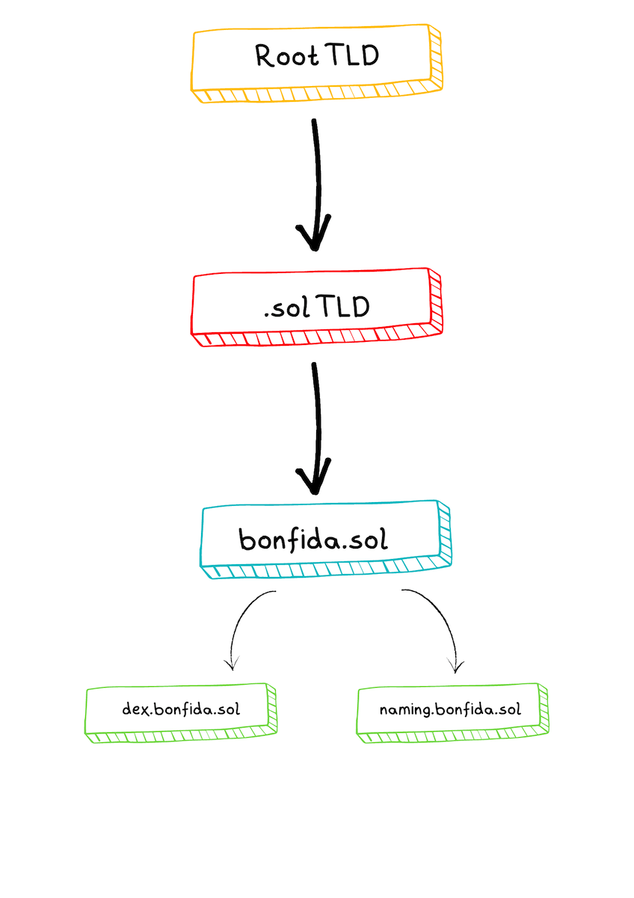

Introduction
Welcome to the Solana Name Service (SNS). SNS has a simple mission of providing a decentralized and yet affordable way to map domain names (represented as .sol) to on-chain data. Where on-chain data can be anything from a Solana (SOL) address to IPFS CID, images, text, and more. One of the clear benefits of the name service is a human-readable name that maps to a SOL address. Essentially, creating an identity for users in the metaverse. Why does this matter you may ask? Well, wallet address formats can be a barrier to entry, and therefore having an identifiable address can facilitate payments and its efficiency. Nonetheless, Solana domain names can have much broader applications than just payments. Most decentralized apps (dApps) have a single point of failure which is their centralized and censorable domain name. However, on-chain domain names cannot be censored or taken away! Thus a website hosted on IPFS (or Arweave) using a Solana domain name would be completely decentralized and very difficult to censor.
Twitter handles & .sol domain names
Both Twitter handles and .sol domain names are a part of SNS, yet are slightly different. A Twitter handle can only be claimed by the owner of the Twitter account. In order to guarantee this, the user needs to tweet the wallet address they want to associate with the account and then sign a transaction using the same wallet address. An oracle then verifies that the public key contained in the tweet matches with the signer. In practice, this means that Twitter names are already reserved. Twitter users just need to claim their public key by tweeting it. Still, this has privacy implications that require you to have an identifiable Twitter account. This is where .sol domain names are useful. The domain names serve the same purpose as Twitter handles except they do not require you to reveal any personal information or a Twitter account.
Installation
The Solana Name Service program is deployed on Mainnet, Devnet and Testnet at the following address:
namesLPneVptA9Z5rqUDD9tMTWEJwofgaYwp8cawRkX
To install the JS library
npm i @bonfida/spl-name-service
or
yarn add @bonfida/spl-name-service
Changelog
- In version
0.1.26the signature ofNameRegistryState.retrievechanged, it is now returning an object of type{ registry: NameRegistryState, nftOwner: PublicKey | undefined }
FAQ
Where can I buy a domain?
You can buy a domain on Bonfida
How do I find a domain if I only know its public key?
If you only know the public key of a domain you can do a reverse look up to find the associated domain. For example:
import { performReverseLookup } from "@bonfida/spl-name-service";
// Public key of bonfida.sol
const domainKey = new PublicKey("Crf8hzfthWGbGbLTVCiqRqV5MVnbpHB1L9KQMd6gsinb");
const domainName = await performReverseLookup(connection, domainKey); // bonfida
How do I find the public key of a domain?
If you want to find the public key of a domain you need to derive it:
import {
getHashedName,
getNameAccountKey,
NameRegistryState,
} from "@bonfida/spl-name-service";
const domainName = "bonfida"; // Without the .sol
// Step 1
const hashedName = await getHashedName(domainName);
// Step 2
const domainKey = await getNameAccountKey(
hashedName,
undefined,
SOL_TLD_AUTHORITY
);
How can I find the content of a domain?
You can access the content of a domain by retrieving its registry:
const { registry } = await NameRegistryState.retrieve(connection, domainKey);
const { parentName, owner, class, data } = registry;
How do I find the twitter handle of a public key?
To find the twitter handle of a public key
import { getHandleAndRegistryKey } from "@bonfida/spl-name-service";
const pubkey = new PublicKey("FidaeBkZkvDqi1GXNEwB8uWmj9Ngx2HXSS5nyGRuVFcZ");
const [handle] = await getHandleAndRegistryKey(connection, pubkey);
How do I find the public key of a twitter handle?
To find the public key of a twitter handle
import { getTwitterRegistry } from "@bonfida/spl-name-service";
const handle = "bonfida";
const registry = await getTwitterRegistry(connection, handle);
How do I find all the subdomains of a domain?
You can find all the subdomains using the following RPC filter:
const filters = [
{
memcmp: {
offset: 32,
bytes: userAccount.toBase58(),
},
},
{
memcmp: {
offset: 0,
bytes: parent_key.toBase58(),
},
},
];
How do I find all the subdomains of a user?
You can find all the subdomains of a user by doing the following
- Retrieve all the domains of the user
- Iterate over the domains and retrieve the subdomains for each
Name Registry
The registry stores information about the domain name. It is made of two things:
- The header
- The data
The data for a domain name is always prefixed by the header, below is the structure of the header in both Rust and JS:
#![allow(unused)] fn main() { /// The layout of the remaining bytes in the account data are determined by the record `class` #[derive(Clone, Debug, BorshSerialize, BorshDeserialize, PartialEq)] pub struct NameRecordHeader { // Names are hierarchical. `parent_name` contains the account address of the parent // name, or `Pubkey::default()` if no parent exists. pub parent_name: Pubkey, // The owner of this name pub owner: Pubkey, // The class of data this account represents (DNS record, twitter handle, SPL Token name/symbol, etc) // // If `Pubkey::default()` the data is unspecified. pub class: Pubkey, } }
export class NameRegistryState {
parentName: PublicKey;
owner: PublicKey;
class: PublicKey;
data: Buffer | undefined;
static HEADER_LEN = 96;
static schema: Schema = new Map([
[
NameRegistryState,
{
kind: "struct",
fields: [
["parentName", [32]],
["owner", [32]],
["class", [32]],
],
},
],
]);
constructor(obj: {
parentName: Uint8Array;
owner: Uint8Array;
class: Uint8Array;
}) {
this.parentName = new PublicKey(obj.parentName);
this.owner = new PublicKey(obj.owner);
this.class = new PublicKey(obj.class);
}
Domain names
This following sections provide information on the following:
- The domain names TLD
- Direct look up
- Reverse look up
- Subdomain look up
- Get all domains of a user
- Favorite domain
- Domain name tokenization
- Domain registration
TLD
Top Level Domains (TLDs) are required to resolve domain names.
The .sol TLD is
export const SOL_TLD_AUTHORITY = new PublicKey(
"58PwtjSDuFHuUkYjH9BYnnQKHfwo9reZhC2zMJv9JPkx"
);
The .sol TLD is owned by the root TLD
export const ROOT_TLD_AUTHORITY = new PublicKey(
"ZoAhWEqTVqHVqupYmEanDobY7dee5YKbQox9BNASZzU"
);
All .sol domains are subdomains of the .sol TLD

Direct look up
In order to get the information of a domain name you need to:
- Hash the domain name
- Derive a PDA from the hash
- Retrieve the account info
import {
getHashedName,
getNameAccountKey,
NameRegistryState,
} from "@bonfida/spl-name-service";
const domainName = "bonfida"; // Without the .sol
// Step 1
const hashedName = await getHashedName(domainName);
// Step 2
const domainKey = await getNameAccountKey(
hashedName,
undefined,
SOL_TLD_AUTHORITY
);
// Step 3
// The registry object contains all the info about the domain name (cf struct above)
// The NFT owner is of type PublicKey | undefined
const { registry, nftOwner } = await NameRegistryState.retrieve(
connection,
domainKey
);
The retrieve method returns an object made of two fields:
registryis of typeNameRegistryStatenftOwneris of typePublicKey | undefined- When
nftOwneris of typePublicKeyit means that the domain is tokenized and the current NFT holder isnftOwner. When a domain is tokenizedregistry.owneris an escrow account that is program owner. Funds should be sent tonftOwner - When
nftOwneris of typeundefinedit means that the domain is not tokenized and funds should be sent toregistry.owner
- When
Reverse look up
This can be used to resolve the domain name from its public key
import { performReverseLookup } from "@bonfida/spl-name-service";
// Public key of bonfida.sol
const domainKey = new PublicKey("Crf8hzfthWGbGbLTVCiqRqV5MVnbpHB1L9KQMd6gsinb");
const domainName = await performReverseLookup(connection, domainKey); // bonfida
Subdomain look up
In order to resolve all subdomains of a parent domain:
import { findSubdomains } from "@bonfida/spl-name-service";
// Public key of bonfida.sol
const parentKey = new PublicKey("Crf8hzfthWGbGbLTVCiqRqV5MVnbpHB1L9KQMd6gsinb");
// Assuming that bonfida.sol has the following subdomains
// - sub_1.bonfida.sol
// - sub_2.bonfida.sol
const subdomains: string[] = await findSubdomains(connection, parentKey); // [sub_1, sub_2]
Get all domains of a user
You can retrieve all the domains owned by a public key using a MemcmpFilter filter
export async function findOwnedNameAccountsForUser(
connection: Connection,
userAccount: PublicKey
): Promise<PublicKey[]> {
const filters = [
{
memcmp: {
offset: 32,
bytes: userAccount.toBase58(),
},
},
{
memcmp: {
offset: 0,
bytes: SOL_TLD_AUTHORITY.toBase58(),
},
},
];
const accounts = await connection.getProgramAccounts(NAME_PROGRAM_ID, {
filters,
});
return accounts.map((a) => a.pubkey);
}
Favorite domain
Users have the possibility to select a domain name as their favorite one. You can retrieve it with the following
import { FavouriteDomain, NAME_OFFERS_ID } from "@bonfida/name-offers";
import { performReverseLookup } from "@bonfida/spl-name-service";
import { PublicKey } from "@solana/web3.js";
const findFavoriteDomainName = async (owner: PublicKey) => {
try {
const [favKey] = await FavouriteDomain.getKey(
NAME_OFFERS_ID,
new PublicKey(owner)
);
const favourite = await FavouriteDomain.retrieve(connection, favKey);
const reverse = await performReverseLookup(
connection,
favourite.nameAccount
);
return reverse;
} catch (err) {
console.log(err);
}
};
Tokenization
Domain names can be tokenized in NFTs that follow the metaplex standard.
To retrieve all the tokenized domain names
import { retrieveNfts } from "@bonfida/spl-name-service";
// nfts is of type PublicKey[] and contains all the mints of the tokenized domain names
const nfts = await retrieveNfts(connection);
To retrieve the owner of the NFT that represent a tokenized domain name
import { retrieveNftOwner } from "@bonfida/spl-name-service";
const owner = await retrieveNftOwner(connection, nameKey);
Registration
Registration instructions can be created either via SDK or API, both methods are equivalent. To register a domain you will have to specify the following:
- Domain names
- Space (between 1kb and 10kb)
- The public key of the buyer
SDK
Unregistered domains can be registered using the SDK @bonfida/spl-name-service with the following instructions:
import { registerDomainName } from "@bonfida/spl-name-service";
const name = "bonfida"; // We want to register bonfida.sol
const space = 1 * 1_000; // We want a 1kB sized domain (max 10kB)
const buyer = new PublicKey("..."); // Publickey of the buyer
const buyerTokenAccount = new PublicKey("..."); // Publickey of the FIDA token account of the buyer
const [, ix] = await registerDomainName(name, space, buyer, buyerTokenAccount);
// sign and send the instruction
API
Registration instructions can also be created via API (equivalent to using the SDK):
POST https://naming-api.bonfida.com/registrar/new-domain
With the following request body
{
"domain": "domain_to_register",
"pubkey": "pubkey_of_the_user",
"space": "domain_space", // Between 1_000 and 10_000
"language": "0"
}
Response:
{
"success": true,
"data": {
"keys": [
{
"pubkey": "SysvarRent111111111111111111111111111111111",
"isSigner": false,
"isWritable": false
},
// ...
{
"pubkey": "62pexKUPWncYECF7DMtENjKbwZnrJoMpvDkrrtceC8Ee",
"isSigner": false,
"isWritable": false
}
],
"programId": "jCebN34bUfdeUYJT13J1yG16XWQpt5PDx6Mse9GUqhR",
"data": [
9,
// ...
0
]
}
}
More details about direct registration can be found here
This following sections provide information on the following:
- The twitter TLD
- How to register a twitter handle
- How to perform a direct look up
- How to perform a reverse look up
TLD
The Twitter handle TLD is
export const TWITTER_ROOT_PARENT_REGISTRY_KEY = new PublicKey(
"4YcexoW3r78zz16J2aqmukBLRwGq6rAvWzJpkYAXqebv"
);
The .twitter TLD is owned by the root TLD and all twitter handles are subdomains of the .twitter TLD
Twitter handle registration
Twitter handles can be registered here and a detailed guide can be found on the Community Help Center
Direct look up
To find the Twitter handle associated to a public key
import { getHandleAndRegistryKey } from "@bonfida/spl-name-service";
const pubkey = new PublicKey("FidaeBkZkvDqi1GXNEwB8uWmj9Ngx2HXSS5nyGRuVFcZ");
const [handle, registryKey] = await getHandleAndRegistryKey(connection, pubkey);
Reverse look up
To find the public key associated to a Twitter handle
import { getTwitterRegistry } from "@bonfida/spl-name-service";
const handle = "bonfida";
const registry = await getTwitterRegistry(connection, handle);